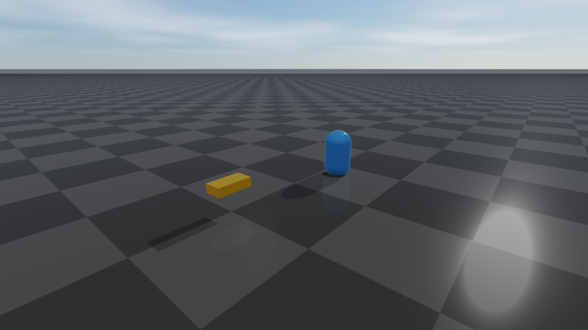

Rayrai Example: Custom Visuals
Overview
Demonstrates custom visual primitives (sphere, box, cylinder, capsule, mesh) and simple animation of positions and orientations.
Screenshot

Binary
CMake target and executable name: rayrai_custom_visuals.
Run
Build and run from your build directory:
cmake --build . --target rayrai_custom_visuals
./rayrai_custom_visuals
On Windows, run rayrai_custom_visuals.exe instead.
This example uses the in-process rayrai renderer (no external client required).
Details
Creates custom visuals (sphere/box/cylinder/capsule/mesh) outside the physics world.
Animates visual positions and orientations each frame.
Demonstrates detectability for picking (
setDetectable(true)).
Source
#include <cmath>
#include <memory>
#include <string>
#include "rayrai/example_common.hpp"
#include "rayrai_example_resources.hpp"
#include "raisim/World.hpp"
int main(int argc, char* argv[]) {
ExampleApp app;
if (!app.init("rayrai_example_visuals", 1280, 720))
return -1;
auto world = std::make_shared<raisim::World>();
world->addGround();
auto viewer = std::make_shared<raisin::RayraiWindow>(world, 1280, 720);
viewer->setBackgroundColor({77, 77, 77, 255});
// viewer->setGroundPatternResourcePath(rayraiRscPath(argv[0], "minitaur/vision/checker_blue.png"));
auto vizSphere = viewer->addVisualSphere("viz_sphere", 0.25, 0.2f, 0.8f, 0.3f, 0.9f);
vizSphere->setPosition(0.0, -2.0, 0.6);
auto vizBox = viewer->addVisualBox("viz_box", 0.4, 0.2, 0.1, 0.9f, 0.6f, 0.1f, 0.8f);
vizBox->setPosition(-1.5, -1.0, 0.3);
vizBox->setDetectable(true);
auto vizCylinder = viewer->addVisualCylinder("viz_cylinder", 0.2, 0.4, 0.1f, 0.7f, 0.9f, 0.6f);
vizCylinder->setPosition(1.5, -1.0, 0.2);
auto vizCapsule = viewer->addVisualCapsule("viz_capsule", 0.2, 0.2, 0.7f, 0.4f, 0.9f, 0.7f);
vizCapsule->setPosition(0.0, 1.5, 0.3);
const std::string monkeyFile = rayraiRscPath(argv[0], "monkey/monkey.obj");
auto vizMesh =
viewer->addVisualMesh("viz_mesh", monkeyFile, 0.5, 0.5, 0.5, 0.8f, 0.8f, 0.9f, 1.0f);
vizMesh->setPosition(1.5, 1.0, 0.4);
while (!app.quit) {
app.processEvents();
if (app.quit)
break;
world->integrate();
const double t = world->getWorldTime();
if (vizSphere) {
vizSphere->setPosition(0.0, -2.0, 0.6 + 0.15 * std::sin(t * 2.0));
}
if (vizMesh) {
vizMesh->setOrientation(std::cos(t * 0.5), 0.0, 0.0, std::sin(t * 0.5));
}
app.beginFrame();
app.renderViewer(*viewer);
app.endFrame();
}
viewer.reset();
app.shutdown();
return 0;
}